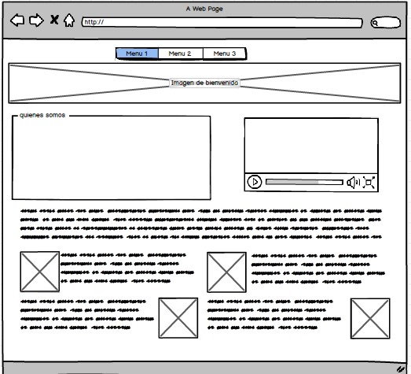

Etiquetas semánticas
¿Qué son las etiquetas semánticas?
¿Qué es la semántica?
¿Porqué debería importarme la semántica HTML?
Para resolver estas cuestiones es necesario saber que es la semántica.
Semántica se refiere a todo aquello que tiene que ver con el significado de una palabra u expresión.
El correcto manejo semántico de una palabra se refiere a que debe existir una relación entre el uso
que se le da a esta palabra, con el significado de ella misma. Pasando al terreno HTML, dentro de él
existen etiquetas con significado semántico, etiquetas que por si mismas brindan un poco de información
sobre que tipo de contenido hay dentro de ellas. Dicho lo anterior ahora ya podemos definir que es el
etiquetado semántico HTML... El correcto etiquetado del contenido, con los tags que brindan una descripción
de lo que hay entre la etiqueta de apertura y la etiqueta de cierre del tag, permite dar información rápida
sobre el contenido de cada etiqueta semántica, mediante el nombre de la propia etiqueta.
Etiquetas semánticas estructurales
Las etiquetas semánticas estructurales nos sirven para que los motores de búsqueda,
o cualquier otro mecanismo automático que lea un sitio web, sepa con exactitud qué partes
de su contenido corresponden a cada una de las partes típicas de un sitio. Generalmente,
en cualquier documento tenemos una cabecera, un cuerpo y un pie de página, elementos que
definen la estructura representados por diversas etiquetas.
De este modo, HTML5 tiene una etiqueta HEADER, que debe englobar aquellos elementos correspondientes
a la cabecera de la página. Tiene un FOOTER, que debe englobar todas las etiquetas que componen el pie.
Luego, para el cuerpo realmente no existe una etiqueta en concreto, sino que se representará por diversas
otras como SECTION, ARTICLE o ASIDE. Existirán además otras etiquetas que representan elementos típicos como
la barra de navegación, etiqueta NAV.
CSS GRID
El CSS grid se puede utilizar para lograr muchos diseños diferentes.
También se destaca por permitir dividir una página en áreas o regiones
principales, por definir la relación en términos de tamaño, posición y
capas entre partes de un control construido a partir de primitivas HTML
¿Por qué se usa CSS grid layout?
El internet móvil presenta un gran número de desafíos para los diseñadores
de páginas web: debido a la enorme variedad de diseños de los dispositivos móviles,
es imposible saber qué formato tiene la pantalla en la que se visualizará el contenido
web. Por esto, es esencial que los elementos individuales (cajas de texto, gráficos,
elementos interactivos) se distribuyan de forma independiente y al mismo tiempo de forma
clara, teniendo en mente las respectivas condiciones de espacio dadas por cada pantalla.
Hace un tiempo se trabajaba con los llamados floats, pero es una técnica compleja que daba
lugar a muchos errores. Hoy los diseñadores cuentan con dos métodos para implementar un diseño
dinámico: además de CSS grid, también se puede usar Flexbox. Sin embargo, las dos técnicas
difieren en algunos aspectos.
Flexbox es unidimensional. Esto quiere decir que los elementos solo se pueden mover a
lo largo de un eje. En cambio, un diseño CSS grid ofrece al diseñador web dos
dimensiones para la colocación de los objetos porque, en lugar de solo un eje,
permite crear una rejilla con filas y columnas.
Diseño mockup
